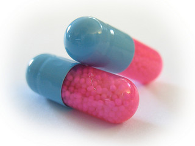
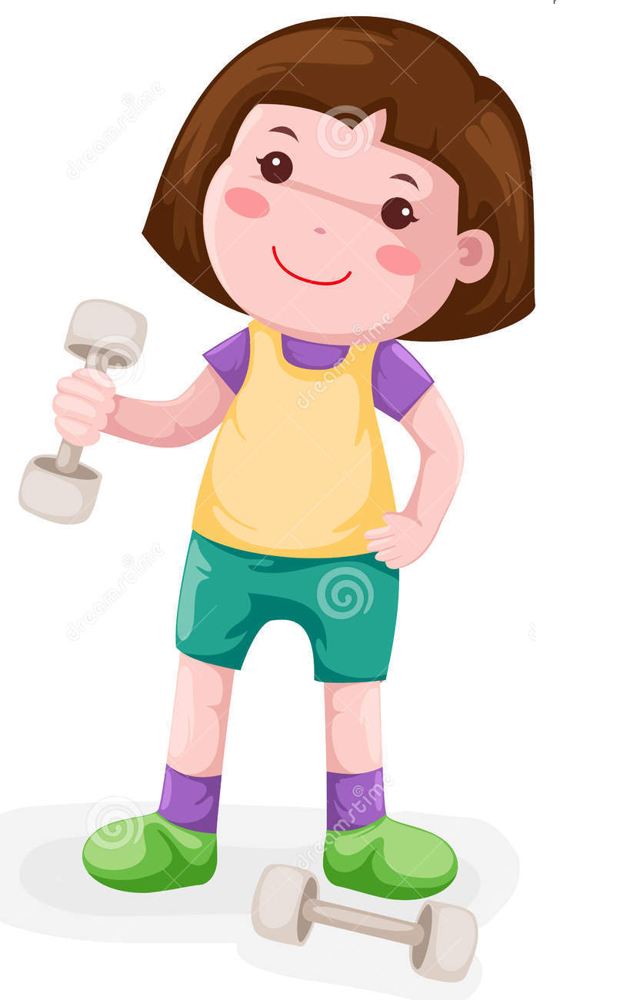

Just as the lungs produce thick, sticky mucus, the pancreas in the body also makes thick mucus. This blocks the release of enzymes needed for digestion of the food kids eat. Most kids with cystic fibrosis need to take enzymes before they eat.

There are many small beads inside the enzyme capsules that are needed by the body
These small beads contain digestive enzymes that help to digest food
When they go into the tummy, the capsule slowly dissapears and the emedicine starts to work
Enzyme suppliments have shor-term and long-term benefits
Digest carbohydrates, proteins and fats which will help you get more calories
Taking enzymes help kids maintain a healty weight
Enzymes help to absorb vitamins and mineral to their bodies which keep kids strong
It leads to poor digestion of food in th tummy, which will cause tummy aches and other problems
If poorly digested food sits in your intestines, which causes gas, pain and unpleasant smells.
You will lose a lot of weight making you unhealthy
Tummy aches will make kids not want to eat any more foods and medicines.